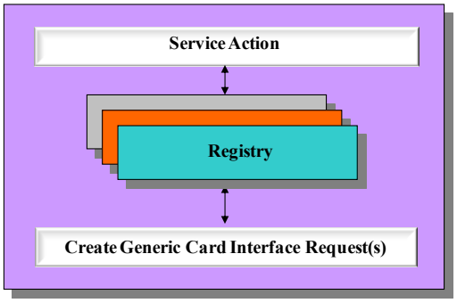
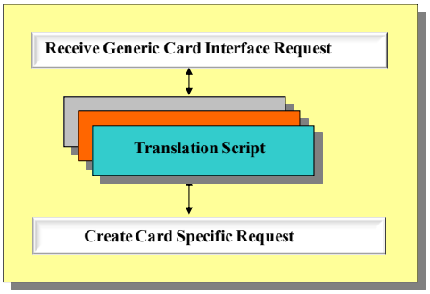
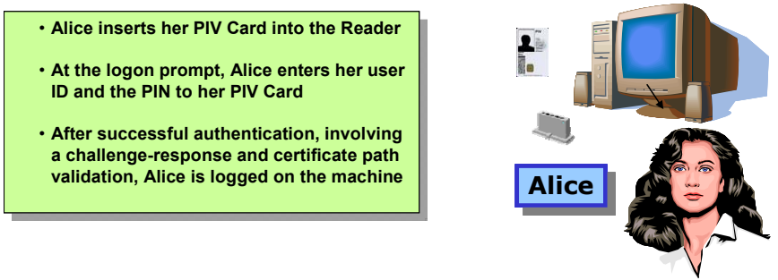
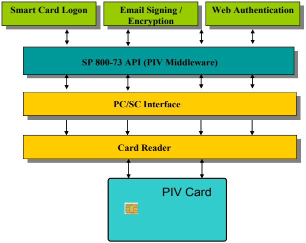

NIST IR 7611 日本語訳
英語タイトル : Use of ISO/IEC 24727日本語タイトル : ISO/IEC 24727 の使用
公開日 : 2009-08-14
原文URL : https://csrc.nist.gov/pubs/ir/7611/final
翻訳編集 : 自動生成（有志による非公式の日本語訳）, 原文取得日 : 2026-10-31, 訳文 : 209 / 210 ブロック
[要約] NIST IR 7611 は、クライアントアプリケーションが異なる発行者の識別情報クレデンシャルにアクセスできるようにするうえでの ISO/IEC 24727 の使用を説明する報告書です。PIV などの既存の連邦の識別情報クレデンシャルと、NIST が開発した PIV アプリケーションのデモンストレーションを論じることにより、この新しい標準を検討します。適用範囲は、既存の PIV アプリケーションの使用と評価を通じて、ISO/IEC 24727 の概念実証を確立することです。本書は、ISO/IEC 24727 の複数部からなる構成を説明し、スマートカードによるログオン、電子メールの署名と暗号化、Web 認証という 3 つのクライアントアプリケーションによる概念実証を示しています。
［NIST のロゴ。公的な標章のため、この非公式サイトには掲載していません。原本 PDF を参照してください。］
NIST Interagency Report 7611
NIST Interagency Report 7611
Use of ISO/IEC 24727
ISO/IEC 24727 の使用
ISO/IEC 24727 Identification cards – Integrated circuit cards programming interfaces
ISO/IEC 24727 Identification cards – Integrated circuit cards programming interfaces
Service Access Layer Interface for Identity (SALII): support for development and use of interoperable identity credentials
Service Access Layer Interface for Identity（SALII）: 相互運用可能な識別情報クレデンシャルの開発と使用の支援
Hung Dang
Hildegard Ferraiolo
William MacGregor
Ketan Mehta
Teresa Schwarzhoff
Hung Dang
Hildegard Ferraiolo
William MacGregor
Ketan Mehta
Teresa Schwarzhoff
Use of ISO/IEC 24727
ISO/IEC 24727 の使用
NIST Interagency Report 7611
NIST Interagency Report 7611
Hung Dang
Hildegard Ferraiolo
William MacGregor
Ketan Mehta
Teresa Schwarzhoff
Hung Dang
Hildegard Ferraiolo
William MacGregor
Ketan Mehta
Teresa Schwarzhoff
COMPUTER SECURITY
コンピュータセキュリティ
Computer Security Division
Information Technology Laboratory
National Institute of Standards and Technology
Gaithersburg, MD 20899-8930
コンピュータセキュリティ部門
情報技術研究所
米国国立標準技術研究所
Gaithersburg, MD 20899-8930
August 2009
2009年8月
U.S. Department of Commerce
Gary Locke, Secretary
米国商務省
Gary Locke 長官
National Institute of Standards and Technology
Dr. Patrick D. Gallagher, Deputy Director
米国国立標準技術研究所
Dr. Patrick D. Gallagher 副所長
Reports on Computer Systems Technology
コンピュータシステム技術に関する報告書
The Information Technology Laboratory (ITL) at the National Institute of Standards and Technology (NIST) promotes the U.S. economy and public welfare by providing technical leadership for the Nation’s measurement and standards infrastructure. ITL develops tests, test methods, reference data, proof of concept implementations, and technical analysis to advance the development and productive use of information technology. ITL’s responsibilities include the development of technical, physical, administrative, and management standards and guidelines for the cost-effective security and privacy of sensitive unclassified information in Federal computer systems. This Interagency Report discusses ITL’s research, guidance, and outreach efforts in computer security and its collaborative activities with industry, government, and academic organizations.
米国国立標準技術研究所（NIST）の情報技術研究所（ITL）は、国の計測・標準の基盤に対して技術的なリーダーシップを提供することにより、米国の経済と公共の福祉を推進しています。ITL は、情報技術の発展と生産的な利用を進めるために、試験、試験方法、参照データ、概念実証の実装、技術分析を開発しています。ITL の責務には、連邦コンピュータシステムにおける機密扱いでない取扱注意情報の、費用対効果の高いセキュリティとプライバシーのための、技術的、物理的、管理的、運用管理上の標準およびガイドラインの開発が含まれます。この Interagency Report は、コンピュータセキュリティにおける ITL の研究、ガイダンス、普及活動と、産業界、政府、学術機関との協力活動について論じます。
National Institute of Standards and Technology Interagency Report 7611, 25 pages
(August 2009)
National Institute of Standards and Technology Interagency Report 7611、25 ページ
（2009年8月）
Certain commercial entities, equipment, or materials may be identified in this document in order to describe an experimental procedure or concept adequately. Such identification is not intended to imply recommendation or endorsement by the National Institute of Standards and Technology, nor is it intended to imply that the entities, materials, or equipment are necessarily the best available for the purpose.
本書では、実験の手順や概念を適切に説明するために、特定の商業的組織、機器、資材が示されている場合があります。そのような記載は、米国国立標準技術研究所による推奨や保証を意味するものではなく、それらの組織、資材、機器が当該目的に利用可能な最良のものであると必ずしも意味するものでもありません。
Acknowledgements
謝辞
The authors, Hildegard Ferraiolo, William MacGregor and Teresa Schwarzhoff of the National Institute of Standards and Technology, Ketan Mehta and Hung Dang of Booz Allen Hamilton wish to thank their colleagues who reviewed drafts of this document and contributed to its development.
著者である米国国立標準技術研究所の Hildegard Ferraiolo、William MacGregor、Teresa Schwarzhoff と、Booz Allen Hamilton の Ketan Mehta、Hung Dang は、本書の草案をレビューし、その作成に貢献してくれた同僚に感謝します。
Table of Contents
目次
List of Appendices
付録一覧
List of Figures
図の一覧
1. Introduction
1. はじめに
Major Federal Identity Management Systems (IDMS) have chosen to use Integrated Circuit Card (ICC) technology, also referred to as smart cards, for their identity credentials. Smart cards are portable and their inherent security capabilities make them well suited for identity credentials. The information and security requirements of an application on a smart card (referred to as card-application1) are determined by an issuing agency in support of their IT enterprise infrastructure. Information, requirements, and card-applications can vary from agency to agency, with numerous methods available to use and store information on smart cards. The legitimate variability results from differing requirements and can result in duplication of similar services and interoperability limitations. For instance, a Personal Identity Verification (PIV) Card and Transportation Worker Identity Credential (TWIC) Card may not be easily and interoperably authenticated by the same application (referred to as client-application2). These two cards support similar but not identical requirements and use different authentication mechanisms and security protocols.
主要な連邦の識別情報管理システム（IDMS）は、識別情報クレデンシャルに、スマートカードとも呼ばれる集積回路カード（ICC）技術を使用することを選択しました。スマートカードは持ち運びができ、その固有のセキュリティ能力により、識別情報クレデンシャルに適しています。スマートカード上のアプリケーション（カードアプリケーション1と呼びます）の情報要件とセキュリティ要件は、発行機関が自らの IT エンタープライズ基盤を支援するために決定します。情報、要件、カードアプリケーションは機関ごとに異なる場合があり、スマートカード上で情報を使用し保存するための方法も数多くあります。この正当なばらつきは、要件の違いから生じ、類似のサービスの重複や相互運用性の制限につながる可能性があります。たとえば、個人識別検証（PIV）カードと Transportation Worker Identity Credential（TWIC）カードは、同じアプリケーション（クライアントアプリケーション2と呼びます）によって容易かつ相互運用可能な形で認証できないことがあります。これら 2 つのカードは、類似しているものの同一ではない要件をサポートし、異なる認証メカニズムとセキュリティプロトコルを使用しています。
Normalized access to information can reduce the potential for duplication of common IDMS services. Without methods that provide standardized access and interfaces, portability and interoperability of identity credentials across different client-applications is a programmatic and technical challenge.
情報への正規化されたアクセスは、共通の IDMS サービスの重複の可能性を減らすことができます。標準化されたアクセスとインタフェースを提供する方法がなければ、異なるクライアントアプリケーションの間での識別情報クレデンシャルの可搬性と相互運用性は、プログラム上および技術上の課題となります。
The ability to interoperate is important to Federal government-wide initiatives. The US has led the development of an international standard for a framework that provides interoperable and secure services for identification, authentication, and digital signatures for identity credentials. The multi-part international standard, International Organization for Standardization (ISO)/International Electrotechnical Commission (IEC) 24727 Identification cards – Integrated circuit cards programming interfaces (hereafter referred to as ISO/IEC 24727), consists of six parts, ISO/IEC 24727-1 through ISO/IEC 24727-6 [1-6]. The ISO/IEC 24727 framework allows any client-application to communicate with any card-application. This multi-part standard enables client-applications to authenticate cardholders and use card services from many different identity cards and across many client-applications.
相互運用する能力は、連邦政府全体の取り組みにとって重要です。米国は、識別情報クレデンシャルの識別、認証、デジタル署名について、相互運用可能で安全なサービスを提供するフレームワークの国際標準の開発を主導してきました。複数部からなる国際標準である International Organization for Standardization (ISO)/International Electrotechnical Commission (IEC) 24727 Identification cards – Integrated circuit cards programming interfaces（以下、ISO/IEC 24727 といいます）は、ISO/IEC 24727-1 から ISO/IEC 24727-6 までの 6 つの部で構成されています [1-6]。ISO/IEC 24727 フレームワークにより、任意のクライアントアプリケーションが任意のカードアプリケーションと通信できます。この複数部からなる標準により、クライアントアプリケーションは、多くの異なる識別カードのカード所有者を認証し、多くのクライアントアプリケーションにわたってカードサービスを利用できます。
1.1 Purpose and Scope
1.1 目的と適用範囲
The purpose of this document is to describe the use of ISO/IEC 24727 in enabling client-applications to access identity credentials from different issuers. This document explores this new standard by discussing existing Federal identity credentials, such as PIV, and the PIV application demonstrations developed by the National Institute of Standards and Technology (NIST).
本書の目的は、クライアントアプリケーションが異なる発行者の識別情報クレデンシャルにアクセスできるようにするうえでの ISO/IEC 24727 の使用を説明することです。本書は、PIV などの既存の連邦の識別情報クレデンシャルと、米国国立標準技術研究所（NIST）が開発した PIV アプリケーションのデモンストレーションを論じることにより、この新しい標準を検討します。
The scope of this document is to establish a proof-of-concept for ISO/IEC 24727 through the use and evaluation of existing PIV applications. The reader should note that this document provides a high-level discussion and strives to minimize technical details. An additional publication elaborating the technical discussion, including an ISO/IEC 24727 reference implementation, is currently under development.
本書の適用範囲は、既存の PIV アプリケーションの使用と評価を通じて、ISO/IEC 24727 の概念実証を確立することです。本書は高水準の議論を提供し、技術的な詳細を最小限にするよう努めていることに、読者は注意すべきです。ISO/IEC 24727 の参照実装を含め、技術的な議論を詳しく述べる追加の刊行物が、現在作成中です。
The proof-of-concept applications discussed in this document are Windows Logon, Linux Logon, Email Signing and Encryption, and Web Authentication. The applications are those developed by NIST to demonstrate the use of PIV Cards in support of Homeland Security Presidential Directive 12 (HSPD-12).
本書で論じる概念実証アプリケーションは、Windows ログオン、Linux ログオン、電子メールの署名と暗号化、Web 認証です。これらのアプリケーションは、国土安全保障大統領指令 12（HSPD-12）を支援して PIV カードの使用を実証するために NIST が開発したものです。
They are available at the http://csrc.nist.gov/groups/SNS/piv/download.html. Using ISO/IEC 24727 with these applications, the proof-of-concept will demonstrate the ability to enable client-applications to accept and use cards from diverse identity credentialing systems.
これらは http://csrc.nist.gov/groups/SNS/piv/download.html で入手できます。これらのアプリケーションで ISO/IEC 24727 を使用することで、この概念実証は、クライアントアプリケーションが多様な識別情報クレデンシャルのシステムのカードを受け入れ、使用できるようにする能力を実証します。
This document is intended for the Federal agencies and agency officials responsible for IDMS programs. It provides program managers and system integrators with a high-level discussion of the multi-part standard ISO/IEC 24727 – Identification cards – Integrated circuit cards programming interfaces. Such information is also useful to government contractors, state and local governments, and security industry vendors implementing related systems, products, and services.
本書は、IDMS プログラムに責任を持つ連邦機関と機関職員を対象としています。本書は、プログラム管理者とシステムインテグレーターに、複数部からなる標準 ISO/IEC 24727 – Identification cards – Integrated circuit cards programming interfaces についての高水準の議論を提供します。このような情報は、関連するシステム、製品、サービスを実装する政府の請負業者、州政府および地方政府、セキュリティ業界のベンダーにとっても有用です。
1.2 Document Organization
1.2 文書の構成
The sections of this document provide a high level discussion on ISO/IEC 24727, its’ application environment, and use with identity cards. The structure is as follows:
本書の各節は、ISO/IEC 24727、そのアプリケーション環境、識別カードでの使用について、高水準の議論を提供します。構成は次のとおりです。
•Section 1, Introduction, provides background information for understanding the scope of this document.
•第 1 節「はじめに」は、本書の適用範囲を理解するための背景情報を提供します。
•Section 2, ISO/IEC 24727 Discussion, provides an overview of ISO/IEC 24727 and discusses its capabilities and uses.
•第 2 節「ISO/IEC 24727 の議論」は、ISO/IEC 24727 の概要を示し、その能力と用途を論じます。
•Section 3, ISO/IEC 24727 Proof-of-Concept, describes the proof-of-concept architecture and design considerations.
•第 3 節「ISO/IEC 24727 の概念実証」は、概念実証のアーキテクチャと設計上の考慮事項を説明します。
•Appendix A, Acronyms, provides list of acronyms used in the document.
•付録 A「略語」は、本書で使用する略語の一覧を示します。
•Appendix B, References, lists the specifications and standards referred to in this document.
•付録 B「参考文献」は、本書で参照する仕様と標準を挙げます。
2. ISO/IEC 24727 Discussion
2. ISO/IEC 24727 の議論
ISO/IEC 24727 is the first international standard to remove identity card dependence from client-application programming. This is achieved by abstracting identity services to a set of normalized interfaces.
ISO/IEC 24727 は、クライアントアプリケーションのプログラミングから識別カードへの依存をなくす最初の国際標準です。これは、識別サービスを一連の正規化されたインタフェースに抽象化することによって達成されます。
ISO/IEC 24727 defines an architecture consisting of standard interfaces for interoperable services3 between a card-application and a client-application. Through such generic interfaces, client-application development can be pursued independent of card-application development. Conversely, a card-application may be designed (data elements, authentication protocols, security protocol services, etc) independent of a specific client-application. This is achieved with the following four ISO/IEC 24727 design features:
ISO/IEC 24727 は、カードアプリケーションとクライアントアプリケーションの間の相互運用可能なサービス3のための標準インタフェースで構成されるアーキテクチャを定義します。このような汎用のインタフェースを通じて、クライアントアプリケーションの開発は、カードアプリケーションの開発とは独立に進められます。逆に、カードアプリケーションは、特定のクライアントアプリケーションとは独立に（データ要素、認証プロトコル、セキュリティプロトコルのサービスなどを）設計できます。これは、次の 4 つの ISO/IEC 24727 の設計上の特徴によって達成されます。
•High-level application programming interface (API) — The high-level API defined in ISO/IEC 24727, referred to here as Service Access Layer Interface for Identity (SALII), enables client-applications to learn about the information and procedural facilities to be found on a card in terms of named data and computational services. Through this normative set of API functions, the client-application can perform identity related activities. This includes aligning information and procedures with the identities of individuals, storing and using such information, and using such procedures for the authentication of identities. The client-application is not required to know details of the card; this is accomplished through the cross-system interoperation. Any logical or physical access control applications can use this interface.
•高水準のアプリケーションプログラミングインタフェース（API） — ISO/IEC 24727 で定義される高水準の API は、ここでは Service Access Layer Interface for Identity（SALII）と呼ばれ、クライアントアプリケーションが、カード上にある情報と手続きの機能について、名前付きのデータと計算サービスの形で知ることを可能にします。この規範的な API 関数の集合を通じて、クライアントアプリケーションは識別情報に関連する活動を実行できます。これには、情報と手続きを個人の識別情報に対応させること、そのような情報を格納し使用すること、そのような手続きを識別情報の認証に使用することが含まれます。クライアントアプリケーションはカードの詳細を知っている必要はなく、これはシステム間の相互運用によって実現されます。論理的または物理的なアクセス制御アプリケーションは、いずれもこのインタフェースを使用できます。
•Cross-system operation (“interoperation”) — While the SALII abstracts services for the client application, the Generic Card Interface (GCI) of ISO/IEC 24727 abstracts lower level details of card data and services. Through these distinct abstractions, client-applications can use identification services in real time, while the Generic Card Interface accommodates differences in card behavior. This feature of ISO/IEC 24727 enables developers to discover card capabilities and to write a client-application once and use it with different credential systems.
•システム間の動作（「相互運用」） — SALII がクライアントアプリケーション向けにサービスを抽象化するのに対し、ISO/IEC 24727 の Generic Card Interface（GCI）は、カードのデータとサービスのより低水準の詳細を抽象化します。これらの別々の抽象化を通じて、クライアントアプリケーションは識別サービスをリアルタイムに使用でき、Generic Card Interface はカードの動作の違いに対応します。ISO/IEC 24727 のこの特徴により、開発者はカードの能力を発見し、クライアントアプリケーションを一度作成すれば、異なるクレデンシャルシステムで使用できます。
•Platform Independence — This feature of ISO/IEC 24727 enables independence from interface devices, such as card readers, allowing compliant implementations to be used in different configurations and environments. The common device interface defined in ISO/IEC 24727 provides a generic interface for readers. This facilitates translation from a common device interface to device specific commands.
•プラットフォーム独立性 — ISO/IEC 24727 のこの特徴により、カードリーダーなどのインタフェースデバイスに依存しなくなり、準拠する実装をさまざまな構成や環境で使用できます。ISO/IEC 24727 で定義される共通のデバイスインタフェースは、リーダー向けの汎用のインタフェースを提供します。これにより、共通のデバイスインタフェースから、デバイス固有のコマンドへの変換が容易になります。
•Extensible architecture — ISO/IEC 24727 includes a normative collection of basic services for authentication, signature, encryption, key establishment, and session establishment. It allows for the addition of new security protocols and authentication mechanisms to perform a variety of interoperable services. Because these services are normative, cards enabled with one or several service(s) will interoperate with ISO/IEC 24727 applications.
•拡張可能なアーキテクチャ — ISO/IEC 24727 には、認証、署名、暗号化、鍵確立、セッション確立のための基本サービスの規範的な集合が含まれます。さまざまな相互運用可能なサービスを実行するために、新しいセキュリティプロトコルや認証メカニズムを追加できます。これらのサービスは規範的であるため、1 つまたは複数のサービスに対応したカードは、ISO/IEC 24727 のアプリケーションと相互運用します。
Specifically, ISO/IEC 24727 provides:
具体的には、ISO/IEC 24727 は次のものを提供します。
•a standard set of services that allow client-applications to interact with card-applications (i.e., services provide for card-application connection, information discovery and retrieval, cryptographic operations, and identity authentication), in essence, providing a common foundation for identification systems;
•クライアントアプリケーションがカードアプリケーションとやり取りできるようにする標準のサービスの集合（すなわち、サービスは、カードアプリケーションへの接続、情報の発見と取得、暗号操作、識別情報の認証を提供します）。基本的に、識別システムの共通の基盤を提供します。
•standardized authentication and security protocols (such as asymmetric internal authenticate, asymmetric external authenticate, symmetric internal authenticate, symmetric external authenticate, PIN compare, biometric compare, client application mutual authentication with key establishment, key transport with mutual authentication based on Rivest Shamir Adleman (RSA));
•標準化された認証プロトコルとセキュリティプロトコル（非対称内部認証、非対称外部認証、共通鍵内部認証、共通鍵外部認証、PIN 照合、生体照合、鍵確立を伴うクライアントアプリケーションの相互認証、Rivest Shamir Adleman（RSA）に基づく相互認証付きの鍵輸送など）。
•standardized access to cryptographic algorithms (to include symmetric key algorithms such as Advanced Encryption Standard (AES), Triple Data Encryption Algorithm (TDEA); asymmetric, public key cryptography such as Elliptic Curve Cryptography (ECC)–based algorithms and RSA; hash functions; Message Authentication Code (MAC) and others);
•暗号アルゴリズムへの標準化されたアクセス（Advanced Encryption Standard（AES）、Triple Data Encryption Algorithm（TDEA）などの共通鍵アルゴリズム、Elliptic Curve Cryptography（ECC）に基づくアルゴリズムや RSA などの公開鍵暗号、ハッシュ関数、Message Authentication Code（MAC）などを含みます）。
•standardized mechanisms for discovery of card application(s) capabilities;
•カードアプリケーションの能力を発見するための標準化されたメカニズム。
•a flexible security model that allows users of the standard to select and determine what level of security will be used by their implementation; and
•標準の利用者が、実装で使用するセキュリティの水準を選択し決定できる、柔軟なセキュリティモデル。
•adaptable interfaces supporting a well-defined requirement for programmability and extensibility of interface devices, such as card readers.
•カードリーダーなどのインタフェースデバイスのプログラム可能性と拡張可能性に関する明確に定義された要件をサポートする、適応可能なインタフェース。
2.1 ISO/IEC 24727 – A Multi-part International Standard
2.1 ISO/IEC 24727 – 複数部からなる国際標準
ISO/IEC 24727 is presented in logical increments. Each part was developed in concert with the other parts for optimal technical synchronization. The first part provides the overall architecture of ISO/IEC 24727. Parts 2, 3, and 4 establish the interface semantics of the architecture. Part 5 provides testing requirements for compliance to the standard. Part 6 provides registration procedures for additional authentication and security protocols, thereby allowing the standard to evolve to meet changing demands and technological capabilities. ISO/IEC 24727 thus consists of the following parts:
ISO/IEC 24727 は、論理的な段階に分けて提示されています。各部は、最適な技術的同期のために、他の部と連携して開発されました。第 1 部は、ISO/IEC 24727 の全体のアーキテクチャを提供します。第 2 部、第 3 部、第 4 部は、アーキテクチャのインタフェースのセマンティクスを確立します。第 5 部は、標準への適合の試験要件を提供します。第 6 部は、追加の認証プロトコルとセキュリティプロトコルの登録手続きを提供し、それにより、標準が変化する要求と技術能力に合わせて進化できるようにします。このように、ISO/IEC 24727 は次の部で構成されます。
•ISO/IEC 24727-1 – Identification cards – Integrated circuit card programming interfaces – Part 1: Architecture. This part is discussed in Section 2.2.
•ISO/IEC 24727-1 – Identification cards – Integrated circuit card programming interfaces – Part 1: Architecture。この部は第 2.2 節で論じます。
•ISO/IEC 24727-2 – Identification cards – Integrated circuit card programming interfaces – Part 2: Generic card interface. This part is explained in Section 2.4.
•ISO/IEC 24727-2 – Identification cards – Integrated circuit card programming interfaces – Part 2: Generic card interface。この部は第 2.4 節で説明します。
•ISO/IEC 24727-3 – Identification cards – Integrated circuit card programming interfaces – Part 3: Application interface. This part is explained in Section 2.3.
•ISO/IEC 24727-3 – Identification cards – Integrated circuit card programming interfaces – Part 3: Application interface。この部は第 2.3 節で説明します。
•ISO/IEC 24727-4 – Identification cards – Integrated circuit card programming interfaces – Part 4: API administration. This part is explained in Section 2.5.
•ISO/IEC 24727-4 – Identification cards – Integrated circuit card programming interfaces – Part 4: API administration。この部は第 2.5 節で説明します。
•ISO/IEC CD 24727-5 – Identification cards – Integrated circuit card programming interfaces – Part 5: Testing. This part is discussed in Section 2.6.
•ISO/IEC CD 24727-5 – Identification cards – Integrated circuit card programming interfaces – Part 5: Testing。この部は第 2.6 節で論じます。
•ISO/IEC CD 24727-6 – Identification cards – Integrated circuit card programming interfaces – Part 6: Registration procedures for the authentication protocols for interoperability. This part is discussed in Section 2.7.
•ISO/IEC CD 24727-6 – Identification cards – Integrated circuit card programming interfaces – Part 6: Registration procedures for the authentication protocols for interoperability。この部は第 2.7 節で論じます。
At the time of this writing, the first four parts are published International Standards and available at http://www.incits.org/. Currently, each part is individually priced at $30.00USD. ISO/IEC 24727-5 and ISO/IEC 24727-6 are nearing completion. For the purposes of this proof-of-concept discussion, the details of parts 5 and 6 are not essential.
本書の執筆時点で、最初の 4 つの部は発行された国際標準であり、http://www.incits.org/ で入手できます。現在、各部は個別に 30.00 米ドルで販売されています。ISO/IEC 24727-5 と ISO/IEC 24727-6 は完成間近です。この概念実証の議論の目的では、第 5 部と第 6 部の詳細は必須ではありません。
2.2 Part 1: ISO/IEC 24727 - Identification cards – Integrated circuit card programming interfaces – Part 1: Architecture
2.2 第 1 部: ISO/IEC 24727 - Identification cards – Integrated circuit card programming interfaces – Part 1: Architecture
Part 1 of ISO/IEC 24727 specifies the architecture on which subsequent parts are based. It forms a high level description of the multi-layered ISO/IEC 24727 APIs and their interactions.
ISO/IEC 24727 の第 1 部は、後続の部の基礎となるアーキテクチャを規定します。これは、多層の ISO/IEC 24727 API とその相互作用についての、高水準の記述を形成します。
The system architecture is depicted in Figure 1. A more detailed architecture diagram can be found in ISO/IEC 24727-1. As shown in Figure 1 below, client-applications use the services and interfaces defined in ISO/IEC 24727-3. The client-application discovers the card’s services, information, and other capabilities through the SALII. After discovery, the client-application can access the services that are implemented on the presented card through the SALII. The actual execution and discovery of the card services and capabilities is further explained in the following sections.
システムアーキテクチャを図 1 に示します。より詳細なアーキテクチャ図は ISO/IEC 24727-1 にあります。以下の図 1 に示すように、クライアントアプリケーションは、ISO/IEC 24727-3 で定義されたサービスとインタフェースを使用します。クライアントアプリケーションは、SALII を通じて、カードのサービス、情報、その他の能力を発見します。発見の後、クライアントアプリケーションは、SALII を通じて、提示されたカードに実装されているサービスにアクセスできます。カードのサービスと能力の実際の実行と発見については、以降の節でさらに説明します。
![Layered architecture diagram. At the top, a grey bar holds three boxes: "Client Application 1", "Client Application 2", "Client Application 3". A down arrow labeled "Action Request" leads to the box "SALII (ISO/IEC 24727-3)", and an up arrow from it labeled "Action Response" returns to the client applications. A stack of cards labeled "Registry" on the right points with an arrow into the SALII box. From SALII a down arrow labeled "Generic Request" leads to "Generic Card Interface (ISO/IEC 24727-2)", with an up arrow labeled "Generic Response". A stack of cards labeled "Translation Script" on the right points with an arrow into the Generic Card Interface box. From it three down arrows (black, orange, cyan) labeled "Card Specific Request" lead to "Interface Device API (ISO/IEC 24727-4)", and three up arrows (black, orange, cyan) labeled "Card Specific Response" return. A brace on the left labeled "Host System" spans from the client applications to the Interface Device API. Four down arrows lead to "Card Reader", which is connected by double-headed arrows to three cards with chips (black, orange, cyan) labeled "Identity Cards".](assets/ir-7611/p0011-drawing-01.png)
階層構造の構成図です。最上部の灰色の帯に「Client Application 1」（クライアントアプリケーション1）、「Client Application 2」（クライアントアプリケーション2）、「Client Application 3」（クライアントアプリケーション3）の3つの箱があります。そこから「Action Request」（アクション要求）と書かれた下向きの矢印が「SALII (ISO/IEC 24727-3)」（SALII（ISO/IEC 24727-3））の箱へ向かい、そこから「Action Response」（アクション応答）と書かれた上向きの矢印がクライアントアプリケーションへ戻ります。右側の「Registry」（レジストリ）と書かれた重なったカードから、SALII の箱へ矢印が向かいます。SALII から「Generic Request」（汎用要求）と書かれた下向きの矢印が「Generic Card Interface (ISO/IEC 24727-2)」（汎用カードインタフェース（ISO/IEC 24727-2））へ向かい、「Generic Response」（汎用応答）と書かれた上向きの矢印が戻ります。右側の「Translation Script」（変換スクリプト）と書かれた重なったカードから、汎用カードインタフェースの箱へ矢印が向かいます。そこから「Card Specific Request」（カード固有の要求）と書かれた黒・橙・水色の3本の下向きの矢印が「Interface Device API (ISO/IEC 24727-4)」（インタフェースデバイス API（ISO/IEC 24727-4））へ向かい、「Card Specific Response」（カード固有の応答）と書かれた黒・橙・水色の3本の上向きの矢印が戻ります。左側の波括弧「Host System」（ホストシステム）は、クライアントアプリケーションからインタフェースデバイス API までを囲みます。4本の下向きの矢印が「Card Reader」（カードリーダ）へ向かい、カードリーダは両向きの矢印で、「Identity Cards」（ID カード）と書かれた黒・橙・水色の3枚のチップ付きカードにつながります。
Figure 1 – Logical Architecture of ISO/IEC 24727
図 1 – ISO/IEC 24727 の論理アーキテクチャ
2.3 Part 3: ISO/IEC 24727-3 – Identification cards – Integrated circuit card programming interfaces – Part 3: Application interface
2.3 第 3 部: ISO/IEC 24727-3 – Identification cards – Integrated circuit card programming interfaces – Part 3: Application interface
ISO/IEC 24727-3 provides high level card services that are available to the client-application through the Service Access Layer Interface for Identity (SALII). Through SALII, the client-application can request actions on the objects of the card-application. A single service request (e.g., authenticate identity) may be a one-step (e.g., Personal Identification Number (PIN) verification) or a multi-step protocol (i.e., two-way authentication). The ISO/IEC 24727-3 implementation is responsible for expanding the single service action into multiple requests to achieve the desired results. Specifically, the ISO/IEC 24727-3 implementation performs data object discovery, learns access control requirements, and organizes actions into sequences of requests as necessary through the Generic Card Interface.
ISO/IEC 24727-3 は、Service Access Layer Interface for Identity（SALII）を通じてクライアントアプリケーションが利用できる、高水準のカードサービスを提供します。クライアントアプリケーションは、SALII を通じて、カードアプリケーションのオブジェクトに対する動作を要求できます。単一のサービス要求（例: 識別情報の認証）は、1 段階（例: 個人識別番号（PIN）の検証）の場合も、複数段階のプロトコル（すなわち、双方向の認証）の場合もあります。ISO/IEC 24727-3 の実装は、単一のサービス動作を、望ましい結果を得るための複数の要求に展開する責任を負います。具体的には、ISO/IEC 24727-3 の実装は、データオブジェクトの発見を行い、アクセス制御要件を学習し、Generic Card Interface を通じて、必要に応じて動作を要求の系列に整理します。
For example, the SALII includes an authentication service named ‘DIDAuthenticate’. This service allows the client-application to authenticate a cardholder’s PIN. Instead of creating a smart card specific command, the client-application invokes the ISO/IEC 24727-3 ‘DIDAuthenticate’ service and passes the PIN number through the interface. The ISO/IEC 24727-3 implementation then packages the PIN number into a Generic Card Interface instruction and sends it to the ISO/IEC 24727-2 implementation. The Generic Card Interface instruction is packaged in accordance with the ‘discovered’ data objects on the card. In order to do the discovery, an ISO/IEC 24727-3 implementation needs to come to know which key reference to use within the card-application. This mapping from the named “PIN number” to the key reference is discovered through a data structure called the registry.
たとえば、SALII には「DIDAuthenticate」という認証サービスがあります。このサービスにより、クライアントアプリケーションは、持ち主の PIN を認証できます。クライアントアプリケーションは、スマートカード固有のコマンドを作成する代わりに、ISO/IEC 24727-3 の「DIDAuthenticate」サービスを呼び出し、インタフェースを通じて PIN 番号を渡します。次に、ISO/IEC 24727-3 の実装は、PIN 番号を Generic Card Interface の命令にまとめ、それを ISO/IEC 24727-2 の実装に送ります。Generic Card Interface の命令は、カード上の「発見された」データオブジェクトに従ってまとめられます。発見を行うには、ISO/IEC 24727-3 の実装は、カードアプリケーション内で使用する鍵参照を知る必要があります。名前付きの「PIN 番号」から鍵参照へのこの対応付けは、レジストリと呼ばれるデータ構造を通じて発見されます。
2.3.1 Registry
2.3.1 レジストリ
The registry is card-application specific and can be retrieved from an on-card storage location (from the card-application’s Application Capability Description (ACD) when it is activated) or from an alternative off-card storage location. The registry contains data object information, access control requirements, key references, cryptographic algorithm references, and protocol references supported by the card-application. The registry also provides associations between the objects and key references. The SALII implementation receives a service action on its interface, and with the help of the registry, translates the service into a sequence of requests/commands for the Part 2 Generic Card Interface. This is illustrated in Figure 2.
レジストリはカードアプリケーション固有であり、カード上の格納場所（カードアプリケーションが有効化された際の Application Capability Description（ACD））から、またはカード外の別の格納場所から取得できます。レジストリには、カードアプリケーションがサポートするデータオブジェクト情報、アクセス制御要件、鍵参照、暗号アルゴリズム参照、プロトコル参照が含まれます。レジストリは、オブジェクトと鍵参照の対応付けも提供します。SALII の実装は、そのインタフェースでサービス動作を受け取り、レジストリを利用して、そのサービスを、第 2 部の Generic Card Interface に対する要求またはコマンドの系列に変換します。これを図 2 に示します。

紫の背景の図です。上部に「Service Action」（サービスアクション）の箱があります。両向きの矢印で、灰・橙・水色の3枚が重なったカードにつながり、最前面のカードに「Registry」（レジストリ）と書かれています。さらに両向きの矢印で、下部の「Create Generic Card Interface Request(s)」（汎用カードインタフェース要求の作成）の箱につながります。
Figure 2 – Use of the Registry by ISO/IEC 24727-3
図 2 – ISO/IEC 24727-3 によるレジストリの使用
2.3.2 ISO/IEC 24727 Authentication Protocols
2.3.2 ISO/IEC 24727 の認証プロトコル
ISO/IEC 24727-3 provides a set of normative authentication protocols. Currently, IDMS implementations use authentication protocols to meet their requirements but the protocols may differ from implementation to implementation. For example, two IDMS implementations might use an on-card biometric comparison authentication protocol. However, it is likely they will have technical differences that make each instance unique even though both implementations are accomplishing authentication using essentially the same technology. The lack of normative authentication and security protocols introduces interoperability challenges within and amongst different identity credentialing systems. For this reason, ISO/IEC 24727-3 and ISO/IEC 24727-6 establish a set of normative authentication protocols including:
ISO/IEC 24727-3 は、規範的な認証プロトコルの集合を提供します。現在、IDMS の実装は、それぞれの要件を満たすために認証プロトコルを使用していますが、そのプロトコルは実装ごとに異なる場合があります。たとえば、2 つの IDMS の実装が、カード上の生体照合による認証プロトコルを使用することがあります。しかし、両方の実装が本質的に同じ技術を使って認証を行っていても、それぞれのインスタンスを固有のものにする技術的な違いがある可能性が高いです。規範的な認証プロトコルとセキュリティプロトコルがないことは、異なる識別情報クレデンシャルのシステムの内部と間に、相互運用性の課題をもたらします。このため、ISO/IEC 24727-3 と ISO/IEC 24727-6 は、次を含む規範的な認証プロトコルの集合を確立します。
•Asymmetric Internal Authenticate
•非対称内部認証
•Asymmetric External Authenticate
•非対称外部認証
•Symmetric Internal Authenticate
•共通鍵内部認証
•Symmetric External Authenticate
•共通鍵外部認証
•PIN Compare
•PIN 照合
•Biometric Compare
•生体照合
•Mutual Authentication with Key Establishment
•鍵確立を伴う相互認証
•Key Transport with mutual authentication based on RSA
•RSA に基づく相互認証付きの鍵輸送
•Secure PIN Compare
•セキュアな PIN 照合
•Global Platform (GP) Asymmetric Authentication
•Global Platform（GP）の非対称認証
2.4 Part 2: ISO/IEC 24727-2 - Identification cards – Integrated circuit card programming interfaces – Generic card interface
2.4 第 2 部: ISO/IEC 24727-2 - Identification cards – Integrated circuit card programming interfaces – Generic card interface
Smart cards use commands largely defined by a well-known international multi-part standard, ISO/IEC 7816, Information technology — Identification cards — Integrated circuit(s) cards with contacts [7]. However, ISO/IEC 7816 provides different methods to communicate with a smart card and often offers implementers different options for the same function. For example, two different commands support retrieval of data from a card. There is further flexibility provided through a range of command specific options. Thus, it is difficult to achieve effective interoperability among different cards, even when they each state adherence to ISO/IEC 7816.
スマートカードは、よく知られた複数部からなる国際標準である ISO/IEC 7816、Information technology — Identification cards — Integrated circuit(s) cards with contacts [7] で主に定義されたコマンドを使用します。しかし、ISO/IEC 7816 はスマートカードと通信するためのさまざまな方法を提供しており、同じ機能について実装者に異なる選択肢を提示することがよくあります。たとえば、カードからのデータの取得は 2 つの異なるコマンドでサポートされます。コマンド固有のさまざまなオプションによって、さらに柔軟性が提供されています。そのため、異なるカードがそれぞれ ISO/IEC 7816 への準拠を表明していても、それらの間で実効的な相互運用性を達成することは困難です。
ISO/IEC 24727-2 recognizes and accommodates these functionally equivalent but syntactically different commands by defining requirements for a procedural element, also referred to as a translation script, that translate the Generic Card Interface commands to the commands actually implemented by a particular card-application. The translation script is card or card-application specific and typically runs on the host system environment. The translation script may be retrieved directly from permanent storage on cards or may be obtained from an alternate storage location. The task of ISO/IEC 24727-2 is to use the retrieved translation script and dynamically translate the ISO/IEC 7816 commands from the entry points of its Generic Card Interface (as specified in Table 2 of ISO/IEC 24727-2) to the ISO/IEC 7816-based commands implemented by the actual card. This is illustrated in Figure 3.
ISO/IEC 24727-2 は、機能的には同等でも構文が異なるこれらのコマンドを認識して吸収するために、Generic Card Interface のコマンドを、特定のカードアプリケーションが実際に実装するコマンドに変換する、変換スクリプトとも呼ばれる手続き要素の要件を定義しています。変換スクリプトはカードまたはカードアプリケーションに固有で、通常はホストシステム環境で実行されます。変換スクリプトは、カードの永続的な記憶領域から直接取得される場合も、別の格納場所から入手される場合もあります。ISO/IEC 24727-2 の役割は、取得した変換スクリプトを使って、その Generic Card Interface のエントリポイント（ISO/IEC 24727-2 の表 2 で規定）にある ISO/IEC 7816 のコマンドを、実際のカードが実装する ISO/IEC 7816 に基づくコマンドへ動的に変換することです。これを図 3 に示します。

淡い黄色の背景の図です。上部に「Receive Generic Card Interface Request」（汎用カードインタフェース要求の受信）の箱があります。両向きの矢印で、灰・橙・水色の3枚が重なったカードにつながり、最前面のカードに「Translation Script」（変換スクリプト）と書かれています。さらに両向きの矢印で、下部の「Create Card Specific Request」（カード固有の要求の作成）の箱につながります。
Figure 3 – Use of the Procedural Element by ISO/IEC 24727-2
図 3 – ISO/IEC 24727-2 による手続き要素の使用
An ISO/IEC 24727-2 implementation does not have prior knowledge of commands used by the card-applications. Rather, it accomplishes the translation with help from the translation script that is retrieved from the card or other alternative locations. Once the Part 2 implementation retrieves the translation script, it can dynamically respond to SALII generic requests, translate the Generic Card Interface commands as needed, and send card specific commands on to the card.
ISO/IEC 24727-2 の実装は、カードアプリケーションが使用するコマンドについての事前の知識を持ちません。むしろ、カードまたは他の別の場所から取得した変換スクリプトの助けを借りて、変換を達成します。第 2 部の実装は、変換スクリプトを取得すると、SALII の汎用の要求に動的に応答し、必要に応じて Generic Card Interface のコマンドを変換し、カード固有のコマンドをカードに送ることができます。
To address platform interoperability and processing efficiency of the translation script, ISO/IEC 24727-2 uses a single language, a virtual machine that conforms to ISO/IEC 20060 – Open Terminal Architecture (OTA) Specification – Virtual Machine Specification [8]. This ensures that the translation script can be interpreted and run on any ISO/IEC 24727-2 implementation in real time without requiring the implementations to support multiple languages.
変換スクリプトのプラットフォーム間の相互運用性と処理効率に対処するため、ISO/IEC 24727-2 は、ISO/IEC 20060 – Open Terminal Architecture (OTA) Specification – Virtual Machine Specification [8] に適合する仮想マシンという単一の言語を使用します。これにより、実装が複数の言語をサポートする必要なく、変換スクリプトを任意の ISO/IEC 24727-2 の実装でリアルタイムに解釈し、実行できます。
2.5 Part 4: ISO/IEC 24727- 4 – Identification cards – Integrated circuit card programming interfaces – API administration
2.5 第 4 部: ISO/IEC 24727- 4 – Identification cards – Integrated circuit card programming interfaces – API administration
ISO/IEC 24727-4 establishes the details for different stack configurations and features that enable client-applications to interface with card-applications in different ways. Stack configuration choices range from performing all necessary services directly on a smart card to achieving the same functionality in a distributed network environment. The stacks defined are:
ISO/IEC 24727-4 は、クライアントアプリケーションがカードアプリケーションとさまざまな方法でインタフェースできるようにする、異なるスタック構成と特徴の詳細を確立します。スタック構成の選択肢は、必要なすべてのサービスをスマートカード上で直接実行するものから、分散ネットワーク環境で同じ機能を実現するものまで幅があります。定義されているスタックは次のとおりです。
•Full network stack — a configuration where the various ISO/IEC 24727 interfaces are implemented in a networked environment on different platforms.
•フルネットワークスタック — ISO/IEC 24727 のさまざまなインタフェースが、ネットワーク環境の異なるプラットフォームに実装される構成。
•Loyal stack — a configuration where ISO/IEC 24727-2 and ISO/IEC 24727-3 are implemented on the same platform.
•Loyal スタック — ISO/IEC 24727-2 と ISO/IEC 24727-3 が同じプラットフォームに実装される構成。
•Remote loyal stack — a configuration where a loyal stack is used on a platform that is remote from the client-application.
•リモート Loyal スタック — Loyal スタックが、クライアントアプリケーションから離れたプラットフォームで使用される構成。
•Opaque Integrated Circuit Card (ICC) stack — a configuration where the card-application implements and interprets the Generic Card Interface commands.
•不透明な集積回路カード（ICC）スタック — カードアプリケーションが Generic Card Interface のコマンドを実装し、解釈する構成。
•ICC resident stack — a configuration where the card-application accepts the SALII actions instead of ISO/IEC 7816 commands.
•ICC 常駐スタック — カードアプリケーションが、ISO/IEC 7816 のコマンドの代わりに SALII の動作を受け付ける構成。
•Remote ICC stack — a configuration where physical connection of the ICC is made to a different platform from the rest of the stack.
•リモート ICC スタック — ICC の物理的な接続が、スタックの残りの部分とは異なるプラットフォームに対して行われる構成。
While all of the above configurations are possible, this document will focus on only two: the Loyal stack and ICC resident stack. Figure 4 provides an illustration of how the two configurations are implemented to achieve the same results.
上記の構成はすべて可能ですが、本書では 2 つだけに焦点を当てます。Loyal スタックと ICC 常駐スタックです。図 4 は、同じ結果を達成するために 2 つの構成がどのように実装されるかを示します。
![Two stack diagrams side by side, separated by a vertical line. Left, titled "Loyal Stack – Implementing ISO/IEC 24727 on a host system": boxes from top to bottom "Client Application", "ISO/IEC 24727 Part 3", "ISO/IEC 24727 Part 2", "Interface Device API", with a double-headed arrow between Client Application and Part 3; a brace on the left labeled "Host System" spans these four boxes. Two down arrows lead from Interface Device API to "Card Reader", which is connected by two double-headed arrows to a purple card with a chip. Right, titled "ICC Resident Stack – Part 3 SALII is implemented on the card.": boxes "Client Application" and "Interface Device API" with a gap between them; a brace on the right labeled "Host System" spans them. One down arrow leads to "Card Reader", which is connected by a double-headed arrow to a grey card with a chip labeled "ISO/IEC 24727 Part 3 (SALII)".](assets/ir-7611/p0015-drawing-01.png)
縦線で区切られた2つのスタック構成を左右に並べた図です。左は「Loyal Stack – Implementing ISO/IEC 24727 on a host system」（ロイヤルスタック：ISO/IEC 24727 をホストシステム上に実装）という見出しで、上から「Client Application」（クライアントアプリケーション）、「ISO/IEC 24727 Part 3」（ISO/IEC 24727 第3部）、「ISO/IEC 24727 Part 2」（ISO/IEC 24727 第2部）、「Interface Device API」（インタフェースデバイス API）の箱が並び、クライアントアプリケーションと第3部の間に両向きの矢印があります。左側の波括弧「Host System」（ホストシステム）がこの4つの箱を囲みます。インタフェースデバイス API から2本の下向きの矢印が「Card Reader」（カードリーダ）へ向かい、カードリーダは2本の両向きの矢印で紫のチップ付きカードにつながります。右は「ICC Resident Stack – Part 3 SALII is implemented on the card.」（ICC 常駐スタック：第3部の SALII はカード上に実装）という見出しで、「Client Application」（クライアントアプリケーション）と「Interface Device API」（インタフェースデバイス API）の箱が間を空けて並び、右側の波括弧「Host System」（ホストシステム）がこれらを囲みます。1本の下向きの矢印が「Card Reader」（カードリーダ）へ向かい、カードリーダは両向きの矢印で、「ISO/IEC 24727 Part 3 (SALII)」（ISO/IEC 24727 第3部（SALII））と書かれた灰色のチップ付きカードにつながります。
Figure 4 – Comparison of Loyal and ICC Resident Stack
図 4 – Loyal スタックと ICC 常駐スタックの比較
2.6 Part 5: ISO/IEC CD 24727- 5 – Identification cards – Integrated circuit card programming interfaces – Testing
2.6 第 5 部: ISO/IEC CD 24727- 5 – Identification cards – Integrated circuit card programming interfaces – Testing
ISO/IEC 24727-5 defines test procedures that can be used to validate conformance assertions. The test procedures focus on testing the behaviors of interfaces for each component of the ISO/IEC 24727 architecture to ensure interoperable services, integrity reporting, and connectivity. The intent is to enable flexibility by providing for single component testing, (e.g., a Part 3 implementation), multiple component testing (e.g., a Part 3 and Part 2 implementation) or complete ISO/IEC 24727 stack testing.
ISO/IEC 24727-5 は、適合性の主張を検証するために使用できる試験手順を定義します。試験手順は、相互運用可能なサービス、完全性の報告、接続性を確保するために、ISO/IEC 24727 アーキテクチャの各構成要素のインタフェースの動作を試験することに焦点を当てています。その意図は、単一の構成要素の試験（例: 第 3 部の実装）、複数の構成要素の試験（例: 第 3 部と第 2 部の実装）、または ISO/IEC 24727 スタック全体の試験を可能にすることにより、柔軟性を実現することです。
2.7 Part 6: ISO/IEC CD 24727- 6 – Identification cards – Integrated circuit card programming interfaces – Registration procedures for the authentication protocols for interoperability
2.7 第 6 部: ISO/IEC CD 24727- 6 – Identification cards – Integrated circuit card programming interfaces – Registration procedures for the authentication protocols for interoperability
This part is intended to provide a facility for adding new authentication protocols to the normative set currently found in Part 3. Modifications to international standards are required to go through the ISO/IEC amendment process and can be protracted in nature. Part 6 will expedite this process without sacrificing ISO/IEC 24727 conformance requirements by providing a registry for protocol developers to register new protocols. The registration authority also provides an option for end-users and card issuers to register their use of ISO/IEC 24727.
この部は、現在第 3 部にある規範的な集合に、新しい認証プロトコルを追加するための仕組みを提供することを意図しています。国際標準の変更は ISO/IEC の改正プロセスを経る必要があり、長引く性質があります。第 6 部は、プロトコルの開発者が新しいプロトコルを登録するためのレジストリを提供することにより、ISO/IEC 24727 の適合要件を損なうことなく、このプロセスを迅速化します。登録機関は、エンドユーザーとカード発行者が ISO/IEC 24727 の使用を登録するための選択肢も提供します。
3. ISO/IEC 24727 Proof-of-Concept
3. ISO/IEC 24727 の概念実証
It is not uncommon for identity related applications and implementations to require ‘tweaking’ when a new card-application or service is added, identity credential attributes change, or an agency chooses to interoperate with diverse identity credentials. Configuration management of post-issuance card and card-application activities in a dynamic production and operational environment historically has offered a challenging management task. Correctly designed ISO/IEC 24727 interfaces provide a means to address these challenges.
識別情報に関連するアプリケーションや実装では、新しいカードアプリケーションやサービスが追加されたとき、識別情報クレデンシャルの属性が変わったとき、または機関が多様な識別情報クレデンシャルとの相互運用を選択したときに、「調整」が必要になることは珍しくありません。動的な生産環境と運用環境における、発行後のカードおよびカードアプリケーションの活動の構成管理は、これまで困難な管理タスクとなってきました。正しく設計された ISO/IEC 24727 インタフェースは、これらの課題に対処する手段を提供します。
3.1 Proof-of-Concept Applications
3.1 概念実証アプリケーション
This section presents a proof-of-concept narrative on the applicability and use of the ISO/IEC 24727 framework. The narrative proceeds through the use of three client-applications previously mentioned: smart card logon, email signing and encryption, and Web authentication using a PIV Card. The proof-of-concept encompasses these three applications using PIV and other identity cards.
本節は、ISO/IEC 24727 フレームワークの適用可能性と使用に関する概念実証の説明を示します。この説明は、前に述べた 3 つのクライアントアプリケーション、すなわち、スマートカードによるログオン、電子メールの署名と暗号化、PIV カードを使用した Web 認証の使用を通じて進みます。この概念実証は、PIV とその他の識別カードを用いて、これら 3 つのアプリケーションを対象とします。
3.1.1 Application 1 – Smart Card Logon
3.1.1 アプリケーション 1 – スマートカードによるログオン
Smart Card Logon illustrates the use of a PIV Card for Windows and Linux logon operations. The cardholder inserts the PIV Card into the card reader, enters the cardholder PIN to unlock the card, and authenticates to the host platform. The cardholder is subsequently logged on to the host platform. Figure 5 illustrates this process.
スマートカードによるログオンは、Windows と Linux のログオン操作における PIV カードの使用を示します。カード所有者は PIV カードをカードリーダーに挿入し、カード所有者の PIN を入力してカードのロックを解除し、ホストプラットフォームに対して認証を行います。その後、カード所有者はホストプラットフォームにログオンします。図 5 はこのプロセスを示します。

イラストです。左の淡い緑の箱に3つの箇条書きがあります。「Alice inserts her PIV Card into the Reader」（アリスが PIV カードをリーダに挿入する）、「At the logon prompt, Alice enters her user ID and the PIN to her PIV Card」（ログオン画面でアリスがユーザー ID と PIV カードの PIN を入力する）、「After successful authentication, involving a challenge-response and certificate path validation, Alice is logged on the machine」（チャレンジレスポンスと証明書パス検証を含む認証に成功すると、アリスはマシンにログオンする）。右には、スピーカー付きのデスクトップコンピュータ、顔写真付きの ID カード、カードリーダ、および「Alice」（アリス）という名札の女性のクリップアートがあります。
Figure 5 – PIV Card Smart Card Logon
図 5 – PIV カードによるスマートカードログオン
At the present time, the PIV smart card logon application can only accept PIV Cards. Although other identity cards may have the same capabilities and features, the PIV middleware (i.e., API) is not equipped to discover different data constructs and applications that may be present on other cards. By using ISO/IEC 24727 mechanisms, the single credential use, in this case PIV, is expanded to allow the use of other identity cards.
現時点では、PIV のスマートカードログオンアプリケーションは PIV カードしか受け付けません。ほかの識別カードが同じ能力や機能を備えていても、PIV ミドルウェア（すなわち API）には、ほかのカードに存在する可能性のある異なるデータ構造やアプリケーションを検出する機能がありません。ISO/IEC 24727 のメカニズムを使用すると、単一のクレデンシャル（この場合は PIV）のみを使用していた状態から、ほかの識別カードも使用できるようになります。
3.1.2 Application 2 – Email Signing and Encryption
3.1.2 アプリケーション 2 – 電子メールの署名と暗号化
The PIV email signing and encryption application (see Figure 6) illustrates the use of a PIV cardholder’s credentials for email signing and encryption. The user is required to establish accounts and configure the email client to use the PIV Card. PIV Cards allow cardholders to digitally sign and encrypt emails without the need for additional credentials. A cardholder signs the email with the on-card Digital Signature Key or decrypts an encrypted message with the on-card Key Management Key (KMK). The process flow for email signing and encryption is depicted in Figure 6.
PIV の電子メール署名・暗号化アプリケーション（図 6 を参照）は、電子メールの署名と暗号化に PIV カード所有者のクレデンシャルを使用する例を示します。ユーザーはアカウントを設定し、PIV カードを使用するよう電子メールクライアントを構成する必要があります。PIV カードにより、カード所有者は追加のクレデンシャルを必要とせずに、電子メールにデジタル署名し、暗号化できます。カード所有者は、カード上の署名用秘密鍵で電子メールに署名するか、カード上の鍵管理用秘密鍵（KMK）で暗号化されたメッセージを復号します。電子メールの署名と暗号化の処理の流れを図 6 に示します。
![Illustration of an email flow between two people. Top left, a box: "OS – Windows", "Software Components", "a) Email Client". Top right, a box: "OS – Linux", "Smart Card Reader", "Additional Software Components", "a) Email Client". Left: clip art of a man with a laptop and a name tag "Bob". Right: clip art of a woman with a name tag "Alice", a desktop computer, an ID card, and a card reader marked with a circled "5". Upper row: a grey arrow "1" from Alice to a certificate scroll labeled "Alice" with a key and a seal marked "CA", then a grey arrow "2" from the scroll to Bob. Lower row: a red arrow "3" from Bob to a certificate scroll labeled "Bob" with a key, a padlock and a seal marked "CA", then a red arrow "4" from the scroll to Alice. At the bottom, a pale green box: "Step 1 Alice signs an email with her on-card private Digital Signature Key." "Step 2 Alice sends the signature and the signature key’s X.509 certificate to Bob." "Step 3 Using the public key embedded in the received X.509 certificate, Bob verifies the signed email from Alice." "Step 4 Bob encrypts an email for Alice using her public Key Management Key (KMK) retrieved from her X.509 KMK certificate (stored locally)" "Step 5 Alice receives and decrypts Bob’s message using her on-card private KMK".](assets/ir-7611/p0017-drawing-01.png)
2人の間の電子メールの流れを示すイラストです。左上の箱には「OS – Windows」（OS：Windows）、「Software Components」（ソフトウェアコンポーネント）、「a) Email Client」（a) 電子メールクライアント）とあります。右上の箱には「OS – Linux」（OS：Linux）、「Smart Card Reader」（スマートカードリーダ）、「Additional Software Components」（追加のソフトウェアコンポーネント）、「a) Email Client」（a) 電子メールクライアント）とあります。左にはノート PC と「Bob」（ボブ）という名札の男性、右には「Alice」（アリス）という名札の女性、デスクトップコンピュータ、ID カード、丸囲みの「5」が付いたカードリーダのクリップアートがあります。上段では、アリス側から灰色の矢印「1」が、鍵と「CA」と書かれた印章の付いた「Alice」（アリス）の証明書の巻物へ向かい、巻物から灰色の矢印「2」がボブへ向かいます。下段では、ボブから赤い矢印「3」が、鍵・南京錠・「CA」と書かれた印章の付いた「Bob」（ボブ）の証明書の巻物へ向かい、巻物から赤い矢印「4」がアリスへ向かいます。下部の淡い緑の箱には次の手順があります。「Step 1 Alice signs an email with her on-card private Digital Signature Key.」（手順1：アリスはカード上のデジタル署名用秘密鍵で電子メールに署名します。）「Step 2 Alice sends the signature and the signature key’s X.509 certificate to Bob.」（手順2：アリスは署名と署名鍵の X.509 証明書をボブに送ります。）「Step 3 Using the public key embedded in the received X.509 certificate, Bob verifies the signed email from Alice.」（手順3：ボブは受け取った X.509 証明書に含まれる公開鍵を使って、アリスからの署名付き電子メールを検証します。）「Step 4 Bob encrypts an email for Alice using her public Key Management Key (KMK) retrieved from her X.509 KMK certificate (stored locally)」（手順4：ボブは、ローカルに保存されたアリスの X.509 KMK 証明書から取得した鍵管理用公開鍵（KMK）を使って、アリス宛ての電子メールを暗号化します。）「Step 5 Alice receives and decrypts Bob’s message using her on-card private KMK」（手順5：アリスはボブのメッセージを受け取り、カード上の鍵管理用秘密鍵で復号します。）。
Figure 6 – PIV Card Email Signing and Encrypting
図 6 – PIV カードによる電子メールの署名と暗号化
The PIV Digital Signature Key and PIV Key Management Key on the PIV Card are used to accomplish email signing and encryption. Through the use of ISO/IEC 24727 constructs, it can be demonstrated that the same signing and encryption protocol used by the PIV Card can be performed with other identity cards that hold digital signature and encryption keys.
電子メールの署名と暗号化には、PIV カード上の PIV デジタル署名用秘密鍵と PIV 鍵管理用秘密鍵が使用されます。ISO/IEC 24727 の構成要素を使用することで、PIV カードで使用されるものと同じ署名・暗号化プロトコルを、デジタル署名鍵と暗号化鍵を保持するほかの識別カードでも実行できることを実証できます。
3.1.3 Application 3 – Web Authentication
3.1.3 アプリケーション 3 – Web 認証
The PIV Web application illustrates the use of PIV credentials for Web authentication by setting up user accounts on the Web server and enabling the browser to use the PIV Card. The cardholder provides his/her card PIN to unlock the card and the browser performs the necessary cryptographic challenge-response with the PIV Card’s private key to authenticate to the Web server. Once authenticated, the Web application provides access to the requested Web pages based on the user’s privileges. The process flow for Web authentication is depicted in Figure 7.
PIV の Web アプリケーションは、Web サーバー上でユーザーアカウントを設定し、ブラウザが PIV カードを使用できるようにすることにより、Web 認証に PIV クレデンシャルを使用する様子を示します。持ち主はカードの PIN を入力してカードのロックを解除し、ブラウザは、Web サーバーに対して認証するために、PIV カードの秘密鍵を用いて必要な暗号のチャレンジレスポンスを実行します。認証されると、Web アプリケーションは、ユーザーの権限に基づいて、要求された Web ページへのアクセスを提供します。Web 認証の処理の流れを図 7 に示します。
![Illustration of web authentication by three users. Top left, a box: "Clients Configuration" (in red), "OS - Linux", "Smart Card Reader", "Additional Software Components", "a) Web Browser". Top centre, clip art of a server computer, with a box to its right: "OS – Windows", "Web Server". Three users with laptops, ID cards and card readers send certificate scrolls to the server by arrows: from the woman labeled "Alice", a green arrow with a scroll labeled "Alice’s PIV Auth Cert"; from the man labeled "John" in the centre, a green arrow with a scroll labeled "John’s PIV Auth Cert"; from the woman labeled "Mary" on the right, a red arrow with a scroll labeled "Mary’s PIV Auth Cert". Boxes under each user: Alice, "Can access the application", "Has access control privileges to add new users"; John, "Can access the application", "Cannot add new users"; Mary, "Cannot access the application as her PIV Authentication certificate is revoked".](assets/ir-7611/p0018-drawing-01.png)
3人の利用者による Web 認証のイラストです。左上の箱には「Clients Configuration」（クライアントの構成、赤字）、「OS - Linux」（OS：Linux）、「Smart Card Reader」（スマートカードリーダ）、「Additional Software Components」（追加のソフトウェアコンポーネント）、「a) Web Browser」（a) Web ブラウザ）とあります。上部中央にサーバコンピュータのクリップアートがあり、その右の箱に「OS – Windows」（OS：Windows）、「Web Server」（Web サーバ）とあります。ノート PC、ID カード、カードリーダを持つ3人の利用者が、矢印で証明書の巻物をサーバへ送ります。「Alice」（アリス）という名札の女性からは緑の矢印と「Alice’s PIV Auth Cert」（アリスの PIV 認証証明書）の巻物、中央の「John」（ジョン）という名札の男性からは緑の矢印と「John’s PIV Auth Cert」（ジョンの PIV 認証証明書）の巻物、右の「Mary」（メアリー）という名札の女性からは赤い矢印と「Mary’s PIV Auth Cert」（メアリーの PIV 認証証明書）の巻物です。各利用者の下の箱には次のようにあります。アリスは「Can access the application」（アプリケーションにアクセスできる）、「Has access control privileges to add new users」（新しい利用者を追加するアクセス制御権限を持つ）。ジョンは「Can access the application」（アプリケーションにアクセスできる）、「Cannot add new users」（新しい利用者を追加できない）。メアリーは「Cannot access the application as her PIV Authentication certificate is revoked」（PIV 認証証明書が失効しているため、アプリケーションにアクセスできない）。
Figure 7 – PIV Card Web Authentication
図 7 – PIV カードによる Web 認証
The on-card PIV Authentication Key is used to enable web authentication. Using ISO/IEC 24727, it can be demonstrated that the same asymmetric authentication protocol can be used with different identity cards and that the client-application can discover the asymmetric authentication key to use for Web authentication.
Web 認証を実現するために、カード上の PIV 認証鍵が使用されます。ISO/IEC 24727 を使用することで、同じ非対称認証プロトコルを異なる識別カードで使用でき、クライアントアプリケーションが Web 認証に使用する非対称認証鍵を発見できることを実証できます。
3.1.4 Existing PIV Applications Architecture
3.1.4 既存の PIV アプリケーションのアーキテクチャ
The applications described in Sections 3.1.1, 3.1.2, and 3.1.3 currently use the PIV reference implementation to communicate with the PIV Card. The client-application is developed independent of the PIV Card and is encoded to use the PIV API as defined in NIST Special Publication (SP) 800-73 [9]. The NIST SP 800-73 also defines a smart card interface called Card Edge interface.
第 3.1.1 節、第 3.1.2 節、第 3.1.3 節で説明したアプリケーションは、現在、PIV カードと通信するために PIV 参照実装を使用しています。クライアントアプリケーションは PIV カードとは独立に開発され、NIST Special Publication (SP) 800-73 [9] で定義された PIV API を使用するようにコード化されています。NIST SP 800-73 は、Card Edge インタフェースと呼ばれるスマートカードのインタフェースも定義しています。
The PIV reference implementation implements the PIVAPI and Card Edge interfaces on the same platform. This configuration is equivalent to a Loyal stack in ISO/IEC 24727 (see Figure 4).
PIV 参照実装は、PIVAPI と Card Edge のインタフェースを同じプラットフォームに実装します。この構成は、ISO/IEC 24727 の Loyal スタックに相当します（図 4 を参照）。
The existing architecture of the PIV demonstration is shown in Figure 8.
PIV のデモンストレーションの既存のアーキテクチャを図 8 に示します。

階層構造のブロック図です。最上段に「Smart Card Logon」（スマートカードログオン）、「Email Signing / Encryption」（電子メールの署名／暗号化）、「Web Authentication」（Web 認証）が並びます。これらは両向きの矢印で「SP 800-73 API (PIV Middleware)」（SP 800-73 API（PIV ミドルウェア））につながり、それが両向きの矢印で「PC/SC Interface」（PC/SC インタフェース）につながります。そこから下向きの矢印が「Card Reader」（カードリーダ）へ向かい、カードリーダは2本の両向きの矢印で、「PIV Card」（PIV カード）と書かれた水色のチップ付きカードにつながります。
Figure 8 – PIV Implementation
図 8 – PIV の実装
3.2 Proof-of-Concept Design Considerations
3.2 概念実証の設計上の考慮事項
An ISO/IEC 24727 reference implementation will be used for the applications described in the previous sections to authenticate identity cards from different issuers. Hypothetically, there are three potential methods of using an identity card with ISO/IEC 24727:
前の節で説明したアプリケーションで異なる発行者の識別カードを認証するために、ISO/IEC 24727 の参照実装が使用される予定です。仮定として、ISO/IEC 24727 で識別カードを使用する方法には、次の 3 つが考えられます。
•Method 1 — ISO/IEC 24727 with currently deployed identity cards
•方法 1 — 現在配備されている識別カードでの ISO/IEC 24727
With this method, a client-application can interact with an ISO/IEC 7816-based identity card with the help of an ISO/IEC 24727 off-card translation script and registry. When a card is inserted in the reader, the ISO/IEC 24727 implementation discovers the card, retrieves the translation script and registry off-card, and begins communication with the card. The ISO/IEC 24727-3 (SALII) implementation receives service requests from the client-application and decomposes the requests for the ISO/IEC 24727 Generic Card Interface. In turn, the Generic Card Interface receives the command/request, translates the commands using the translation script, and sends the card-specific command(s) to the card. The card produces one or more response(s) that are translated by the translation script on their way back to the ISO/IEC 24727-3, which produces a service response to the client-application.
この方法では、クライアントアプリケーションは、ISO/IEC 24727 のカード外の変換スクリプトとレジストリの助けを借りて、ISO/IEC 7816 に基づく識別カードとやり取りできます。カードがリーダーに挿入されると、ISO/IEC 24727 の実装はカードを発見し、カード外から変換スクリプトとレジストリを取得し、カードとの通信を開始します。ISO/IEC 24727-3（SALII）の実装は、クライアントアプリケーションからサービス要求を受け取り、その要求を ISO/IEC 24727 の Generic Card Interface 向けに分解します。次に、Generic Card Interface は、コマンドまたは要求を受け取り、変換スクリプトを使ってコマンドを変換し、カード固有のコマンドをカードに送ります。カードは 1 つ以上の応答を生成し、それらは ISO/IEC 24727-3 に戻る途中で変換スクリプトによって変換され、ISO/IEC 24727-3 がクライアントアプリケーションへのサービス応答を生成します。
An example of method 1 implementation in the Federal government is the current PIV Card where the translation script and registry is retrieved off-card by the ISO/IEC 24727 implementation. With the ISO/IEC 24727 enabled client-applications and card specific translation script and registry, Federal government agencies can authenticate current PIV Cards as well as other identity cards. With this method a current PIV Card can be used with today’s PIV systems and with ISO/IEC 24727 systems.
連邦政府での方法 1 の実装の例は、現在の PIV カードで、変換スクリプトとレジストリが ISO/IEC 24727 の実装によってカード外から取得されます。ISO/IEC 24727 に対応したクライアントアプリケーションと、カード固有の変換スクリプトおよびレジストリがあれば、連邦政府機関は、現在の PIV カードとほかの識別カードを認証できます。この方法では、現在の PIV カードを、現在の PIV システムと ISO/IEC 24727 システムの両方で使用できます。
•Method 2 — ISO/IEC 24727 with translation script and registry on identity cards
•方法 2 — 識別カード上に変換スクリプトとレジストリがある ISO/IEC 24727
This is similar to method 1, with the exception that the translation script and registry are retrieved directly from the identity card using an ISO/IEC 24727 bootstrap procedure. The bootstrap procedure allows the translation script and registry to be discovered by ISO/IEC 24727 implementation on the host system and read from the card. The client-application uses the identity card in the same manner as in method 1. As a result, client-applications based on ISO/IEC 24727 are unaware of where the translation script and registry are retrieved and remain unchanged.
これは方法 1 と似ていますが、変換スクリプトとレジストリが、ISO/IEC 24727 のブートストラップ手順を用いて識別カードから直接取得される点が異なります。ブートストラップ手順により、ホストシステム上の ISO/IEC 24727 の実装は、変換スクリプトとレジストリを発見し、カードから読み取れます。クライアントアプリケーションは、方法 1 と同じ方法で識別カードを使用します。その結果、ISO/IEC 24727 に基づくクライアントアプリケーションは、変換スクリプトとレジストリがどこから取得されるかを意識せず、変更されないままです。
An example of method 2 implementation in the Federal government would be an updated PIV Card where the translation script and registry is retrieved from the card. With this method, the client-applications benefit from the portability and immediate access to the translation script and registry available on the card. Client-applications built on ISO/IEC 24727 are unaffected by the use of method 1 versus method 2 cards. From the PIV Card perspective, the method 2 implementation is different from method 1 because the PIV Card contains additional data objects and a bootstrap procedure. Like a method 1 PIV Card, a method 2 PIV Card can be used in today’s PIV systems and in ISO/IEC 24727 implementations but the ISO/IEC 24727 systems do not need to be pre-loaded with the PIV translation script and registry because they are carried on the PIV Card.
連邦政府での方法 2 の実装の例は、変換スクリプトとレジストリがカードから取得される、更新された PIV カードです。この方法では、クライアントアプリケーションは、カード上で利用できる変換スクリプトとレジストリの可搬性と即時のアクセスの恩恵を受けます。ISO/IEC 24727 上に構築されたクライアントアプリケーションは、方法 1 のカードを使うか方法 2 のカードを使うかによる影響を受けません。PIV カードの観点では、PIV カードに追加のデータオブジェクトとブートストラップ手順が含まれるため、方法 2 の実装は方法 1 と異なります。方法 1 の PIV カードと同様に、方法 2 の PIV カードは、現在の PIV システムと ISO/IEC 24727 の実装で使用できますが、ISO/IEC 24727 システムは、PIV の変換スクリプトとレジストリが PIV カードに載っているため、それらを事前に読み込んでおく必要がありません。
•Method 3 — ISO/IEC 24727 ICC-Resident Stack implemented on the identity card
•方法 3 — 識別カードに実装された ISO/IEC 24727 の ICC 常駐スタック
With an ISO/IEC 24727 ICC-Resident Stack, the identity card responds to service requests through the SALII (see Figure 4). The complexity of ISO/IEC 7816 card specific commands and responses is removed. Consequently, the ISO/IEC 24727-2 implementation does not exist as the card directly responds to SALII actions. Client-applications built on ISO/IEC 24727 are unaffected by the methods and remains unchanged. These client-applications could, therefore, authenticate identities using method 1, method 2, or method 3 cards.
ISO/IEC 24727 の ICC 常駐スタックでは、識別カードは SALII を通じてサービス要求に応答します（図 4 を参照）。ISO/IEC 7816 のカード固有のコマンドと応答の複雑さはなくなります。その結果、カードが SALII の動作に直接応答するため、ISO/IEC 24727-2 の実装は存在しません。ISO/IEC 24727 上に構築されたクライアントアプリケーションは、これらの方法による影響を受けず、変更されないままです。したがって、これらのクライアントアプリケーションは、方法 1、方法 2、方法 3 のいずれのカードでも識別情報を認証できます。
An example of method 3 implementation in the Federal government would be a PIV card-application using a SALII interface. From the PIV perspective, a method 3 PIV Card differs from the method 1 and method 2 PIV Card because it uses the SALII interface on-card. While method 3 impacts backward-compatibility for today's Federal Information Processing Standard (FIPS) 201 PIV systems, it increases security through the capabilities of ISO/IEC 24727 access controls and secure sessions for interconnection between the PIV Card with the ICC-Resident Stack and the applications using the card. These security mechanisms are more robust and comprehensive than those currently in use.
連邦政府での方法 3 の実装の例は、SALII インタフェースを使用する PIV カードアプリケーションです。PIV の観点では、方法 3 の PIV カードは、カード上で SALII インタフェースを使用するため、方法 1 や方法 2 の PIV カードとは異なります。方法 3 は、現在の Federal Information Processing Standard（FIPS）201 の PIV システムとの後方互換性に影響しますが、ICC 常駐スタックを備えた PIV カードと、そのカードを使用するアプリケーションとの相互接続のための、ISO/IEC 24727 のアクセス制御とセキュアセッションの能力を通じて、セキュリティを高めます。これらのセキュリティメカニズムは、現在使用されているものよりも堅牢で包括的です。
The methods described in this document are specific design approaches and other approaches are possible.
本書で説明する方法は具体的な設計アプローチであり、ほかのアプローチも可能です。
3.2.1 Design Improvements and Trade-offs
3.2.1 設計の改善とトレードオフ
The three methods are hypothetical and discussions on the practical integration of PIV with ISO/IEC 24727 components are just beginning. These methods demonstrate, at a high-level, that PIV Cards can be used with ISO/IEC 24727 components in a number of very different ways. Each of the methods embodies different design improvements and tradeoffs:
3 つの方法は仮説であり、PIV と ISO/IEC 24727 の構成要素の実用的な統合についての議論は始まったばかりです。これらの方法は、PIV カードを ISO/IEC 24727 の構成要素と、いくつもの非常に異なる方法で使用できることを、高水準で実証します。各方法には、それぞれ異なる設計上の改善とトレードオフが含まれています。
•Method 1 enables an ISO/IEC 24727 implementation to translate PIV Card commands and requires no change to existing PIV Cards while improving the ability to interoperate with other credentials. This method offers complete backward compatibility with existing PIV systems.
•方法 1 は、ISO/IEC 24727 の実装が PIV カードのコマンドを変換できるようにし、ほかのクレデンシャルと相互運用する能力を高めつつ、既存の PIV カードの変更を必要としません。この方法は、既存の PIV システムとの完全な後方互換性を提供します。
•Method 2 requires the addition of two objects and a bootstrap procedure to existing PIV cards but improves the transparent use with other credentials and minimizes configuration management of post-issuance activities. The use of additional objects would impact FIPS 140-2 validation [10].
•方法 2 は、既存の PIV カードに 2 つのオブジェクトとブートストラップ手順を追加する必要がありますが、ほかのクレデンシャルとの透過的な使用を改善し、発行後の活動の構成管理を最小限にします。追加のオブジェクトの使用は、FIPS 140-2 の検証 [10] に影響します。
•Method 3 provides a way forward for improvements in security and interoperability but must consider backwards compatibility with existing PIV implementations and impact to FIPS 140-2 validation. To maintain compatibility with existing PIV system, the method 3 PIV Card, can be combined side-by side with a FIPS 201 PIV Card Edge specification. "Side-by-side" means that the FIPS 201 PIV Card Edge and the ICC-Resident Stack share the same PIV data objects on the smart card. This side-by-side method 3 PIV Card can therefore project the user's credentials either through today's PIV Card Edge or through the ISO/IEC 24727 ICC-Resident Stack interface with the SALII. A side-by side method 3 PIV Card is simultaneously a current PIV Card and a consequent PIV Card that provides an innovative API for future application.
•方法 3 は、セキュリティと相互運用性の改善に向けた道筋を示しますが、既存の PIV 実装との下位互換性と、FIPS 140-2 検証への影響を考慮しなければなりません。既存の PIV システムとの互換性を維持するため、方法 3 の PIV カードは、FIPS 201 PIV Card Edge 仕様と並べて併用できます。「並べて併用」とは、FIPS 201 PIV Card Edge と ICC 常駐スタックが、スマートカード上の同じ PIV データオブジェクトを共有することを意味します。したがって、この並列型の方法 3 の PIV カードは、現在の PIV Card Edge を通じて、または SALII を備えた ISO/IEC 24727 ICC 常駐スタックのインタフェースを通じて、ユーザーのクレデンシャルを提示できます。並列型の方法 3 の PIV カードは、現行の PIV カードであると同時に、将来のアプリケーション向けに革新的な API を提供する次世代の PIV カードでもあります。
Because of the platform independence inherent to ISO/IEC 24727, the ISO/IEC 24727 implementation on the host system is constructed to read the PIV Cards as well as other smart card based credentials.
ISO/IEC 24727 に固有のプラットフォーム独立性のため、ホストシステム上の ISO/IEC 24727 の実装は、PIV カードのほか、スマートカードに基づくほかのクレデンシャルも読み取れるように構築されます。
3.2.2 Proof-of-concept Architecture
3.2.2 概念実証のアーキテクチャ
For the purpose of the proof-of-concept, NIST plans to replace the PIV middleware with ISO/IEC 24727 constructs, using a method 1 PIV Card for backward compatibility. The resulting architecture after integrating PIV Cards in the ISO/IEC 24727 framework is shown in Figure 9.
概念実証の目的で、NIST は、後方互換性のために方法 1 の PIV カードを使用して、PIV ミドルウェアを ISO/IEC 24727 の構成要素に置き換えることを計画しています。PIV カードを ISO/IEC 24727 フレームワークに統合した後のアーキテクチャを図 9 に示します。
![Layered architecture diagram. At the top, a grey bar holds three boxes: "Smart Card Logon", "Email Signing and Encryption", "Web Authentication". A down arrow labeled "Action Request" leads to "ISO/IEC 24727-3 (SALII)", and an up arrow labeled "Action Response" returns. A box "PIV Registry" on the right points with an arrow into the SALII box. From SALII a down arrow labeled "Generic Request" leads to "Generic Card Interface (ISO/IEC 24727-2)", with an up arrow labeled "Generic Response". A box "PIV Translation Script" on the right points with an arrow into the Generic Card Interface box. From it a down arrow labeled "Card Specific Request" leads to "Interface Device API (ISO/IEC 24727-4)", with an up arrow labeled "Card Specific Response". Four down arrows lead to "Card Reader", which is connected by two double-headed arrows to a cyan card with a chip labeled "PIV Card".](assets/ir-7611/p0021-drawing-01.png)
階層構造の構成図です。最上部の灰色の帯に「Smart Card Logon」（スマートカードログオン）、「Email Signing and Encryption」（電子メールの署名と暗号化）、「Web Authentication」（Web 認証）の3つの箱があります。そこから「Action Request」（アクション要求）と書かれた下向きの矢印が「ISO/IEC 24727-3 (SALII)」（ISO/IEC 24727-3（SALII））へ向かい、「Action Response」（アクション応答）と書かれた上向きの矢印が戻ります。右側の「PIV Registry」（PIV レジストリ）の箱から、SALII の箱へ矢印が向かいます。SALII から「Generic Request」（汎用要求）と書かれた下向きの矢印が「Generic Card Interface (ISO/IEC 24727-2)」（汎用カードインタフェース（ISO/IEC 24727-2））へ向かい、「Generic Response」（汎用応答）と書かれた上向きの矢印が戻ります。右側の「PIV Translation Script」（PIV 変換スクリプト）の箱から、汎用カードインタフェースの箱へ矢印が向かいます。そこから「Card Specific Request」（カード固有の要求）と書かれた下向きの矢印が「Interface Device API (ISO/IEC 24727-4)」（インタフェースデバイス API（ISO/IEC 24727-4））へ向かい、「Card Specific Response」（カード固有の応答）と書かれた上向きの矢印が戻ります。4本の下向きの矢印が「Card Reader」（カードリーダ）へ向かい、カードリーダは2本の両向きの矢印で、「PIV Card」（PIV カード）と書かれた水色のチップ付きカードにつながります。
Figure 9 – Using PIV Card in the ISO/IEC 24727 Framework
図 9 – ISO/IEC 24727 フレームワークでの PIV カードの使用
Note that the client-application is completely independent of the identity credential. Also, note that the ISO/IEC 24727-2 and ISO/IEC 24727-3 implementations do not contain any PIV card specific information or logic. They do, however, use the translation script and registry to discover the properties and capabilities of the PIV Card in real-time. Therefore, it is anticipated that more identity credential cards can be added, as shown in Figure 1, to this architecture using the same methodology. A single ISO/IEC 24727 conformant implementation can be configured to authenticate various credentials, such as the Transportation Workers Identity Credential, DoD Common Access Card, Western Hemisphere Travel Initiative, and PIV identity credentials.
クライアントアプリケーションは識別クレデンシャルから完全に独立していることに注意してください。また、ISO/IEC 24727-2 と ISO/IEC 24727-3 の実装には、PIV カード固有の情報やロジックが含まれていないことにも注意してください。ただし、これらの実装は変換スクリプトとレジストリを使って、PIV カードの特性と能力をリアルタイムで検出します。したがって、図 1 に示すように、同じ方法論を用いて、このアーキテクチャにさらに多くの識別クレデンシャルカードを追加できると見込まれます。単一の ISO/IEC 24727 準拠実装を、Transportation Workers Identity Credential、DoD Common Access Card、Western Hemisphere Travel Initiative、PIV 識別クレデンシャルなど、さまざまなクレデンシャルを認証するように構成できます。
3.3 Summary
3.3 まとめ
This document provides a high-level discussion on the technical aspects of ISO/IEC 24727. It briefly discusses each of the six parts. Design approaches and backward compatibility are considered. A discussion on normative authentication protocols is presented. The proof-of-concept presented is based on the use of ISO/IEC 24727 with the US government identity credential, PIV, PIV card-application, and other identity credentials. The presentation is done at a high-level and a follow-on document will, through the use of a reference implementation, provide the technical detailing in support of this discussion.
本書は、ISO/IEC 24727 の技術的側面について、高水準の議論を提供します。6 つの部のそれぞれを簡潔に論じます。設計アプローチと後方互換性を検討します。規範的な認証プロトコルについての議論を示します。示した概念実証は、米国政府の識別情報クレデンシャルである PIV、PIV カードアプリケーション、ほかの識別情報クレデンシャルでの ISO/IEC 24727 の使用に基づいています。この提示は高水準で行われており、続く文書が、参照実装の使用を通じて、この議論を支える技術的な詳細を提供します。
Appendix A—Acronyms
付録 A—略語
The following acronyms and abbreviations are used throughout this document:
本書全体で、次の略語と略称を使用します。
| ACD | Application Capability Description |
| AES | Advanced Encryption Standard |
| APDU | Application Protocol Data Unit |
| API | Application Programming Interface |
| CAC | Common Access Card |
| CSP | Cryptographic Service Provider |
| FIPS | Federal Information Processing Standards |
| GCI | Generic Card Interface |
| HSPD | Homeland Security Presidential Directive |
| IDMS | Identity Management System |
| ICC | Integrated Circuit Card |
| IEC | International Electrotechnical Commission |
| IIS | Internet Information Server |
| ISO | International Organization for Standardization |
| ITL | Information Technology Laboratory |
| KMK | Key Management Key |
| MAC | Message Authentication Code |
| NIST | National Institute of Standards and Technology |
| NISTIR | National Institute of Standards and Technology Interagency Report |
| OMB | Office of Management and Budget |
| OSI | Open System Interconnection |
| OTA | Open Terminal Architecture |
| PC/SC | Personal Computer/Smart Card |
| PIN | Personal Identification Number |
| PIV | Personal Identity Verification |
| PKCS | Public Key Cryptography Standards |
| RSA | Rivest Shamir Adleman |
| SAL | Service Access Layer |
| SALII | ISO/IEC 24727 Service Access Layer Interface for Identity |
| SP | Special Publication |
| TDEA | Triple Data Encryption Algorithm |
| TWIC | Transportation Worker Identification Credential |
| US | United States |
| WHTI | Western Hemisphere Travel Initiative |
| ACD | Application Capability Description |
| AES | Advanced Encryption Standard |
| APDU | Application Protocol Data Unit |
| API | Application Programming Interface |
| CAC | Common Access Card |
| CSP | Cryptographic Service Provider |
| FIPS | Federal Information Processing Standards |
| GCI | Generic Card Interface |
| HSPD | Homeland Security Presidential Directive |
| IDMS | Identity Management System |
| ICC | Integrated Circuit Card |
| IEC | International Electrotechnical Commission |
| IIS | Internet Information Server |
| ISO | International Organization for Standardization |
| ITL | Information Technology Laboratory |
| KMK | Key Management Key |
| MAC | Message Authentication Code |
| NIST | National Institute of Standards and Technology |
| NISTIR | National Institute of Standards and Technology Interagency Report |
| OMB | Office of Management and Budget |
| OSI | Open System Interconnection |
| OTA | Open Terminal Architecture |
| PC/SC | Personal Computer/Smart Card |
| PIN | Personal Identification Number |
| PIV | Personal Identity Verification |
| PKCS | Public Key Cryptography Standards |
| RSA | Rivest Shamir Adleman |
| SAL | Service Access Layer |
| SALII | ISO/IEC 24727 Service Access Layer Interface for Identity |
| SP | Special Publication |
| TDEA | Triple Data Encryption Algorithm |
| TWIC | Transportation Worker Identification Credential |
| US | United States |
| WHTI | Western Hemisphere Travel Initiative |
Appendix B—References
付録 B—参考文献
[1] ISO/IEC 24727-1- Identification Cards – Integrated Circuit Cards Programming Interfaces – Part 1: Architecture, June 23, 2006.
[1] ISO/IEC 24727-1- Identification Cards – Integrated Circuit Cards Programming Interfaces – Part 1: Architecture, June 23, 2006.
[2] ISO/IEC 24727-2- Identification Cards – Integrated Circuit Card Programming Interfaces – Part 2: Generic card interface, September 2008.
[2] ISO/IEC 24727-2- Identification Cards – Integrated Circuit Card Programming Interfaces – Part 2: Generic card interface, September 2008.
[3] ISO/IEC 24727-3 - Identification Cards – Integrated Circuit Card Programming Interfaces – Part 3: Application interface, September 2008.
[3] ISO/IEC 24727-3 - Identification Cards – Integrated Circuit Card Programming Interfaces – Part 3: Application interface, September 2008.
[4] ISO/IEC 24727-4 - Identification Cards – Integrated Circuit Cards Programming Interface – Part 4: API Administration, September 2008.
[4] ISO/IEC 24727-4 - Identification Cards – Integrated Circuit Cards Programming Interface – Part 4: API Administration, September 2008.
[5] ISO/IEC CD 24727-5 - Identification Cards – Integrated Circuit Cards Programming Interface – Part 4: Testing.
[5] ISO/IEC CD 24727-5 - Identification Cards – Integrated Circuit Cards Programming Interface – Part 4: Testing.
[6] ISO/IEC FDIS 24727-6 - Identification Cards – Integrated Circuit Cards Programming Interface – Part 6: Registration procedures for the authentication protocols for interoperability.
[6] ISO/IEC FDIS 24727-6 - Identification Cards – Integrated Circuit Cards Programming Interface – Part 6: Registration procedures for the authentication protocols for interoperability.
[7] ISO/IEC 7816 (Parts 4, 5, 6, 8, and 9), Information technology — Identification cards — Integrated circuit(s) cards with contacts.
[7] ISO/IEC 7816 (Parts 4, 5, 6, 8, and 9), Information technology — Identification cards — Integrated circuit(s) cards with contacts.
[8] ISO/IEC 20060 Information technology - Open Terminal Architecture (OTA) specification - Virtual machine specification, 2001.
[8] ISO/IEC 20060 Information technology - Open Terminal Architecture (OTA) specification - Virtual machine specification, 2001.
[9] NIST SP 800-73-2, Interfaces for Personal Identity Verification, September 2008. (See http://csrc.nist.gov/groups/SNS/piv/standards.html)
[9] NIST SP 800-73-2, Interfaces for Personal Identity Verification, September 2008. (See http://csrc.nist.gov/groups/SNS/piv/standards.html)
[10] FIPS Publication 140-2, Security Requirements for Cryptographic Modules, NIST, May 25, 2001. Available at http://csrc.nist.gov/publications/fips/fips140-2/fips1402.pdf.
[10] FIPS Publication 140-2, Security Requirements for Cryptographic Modules, NIST, May 25, 2001. 入手先: http://csrc.nist.gov/publications/fips/fips140-2/fips1402.pdf.